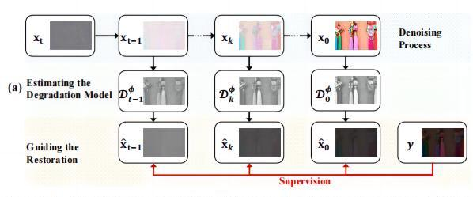
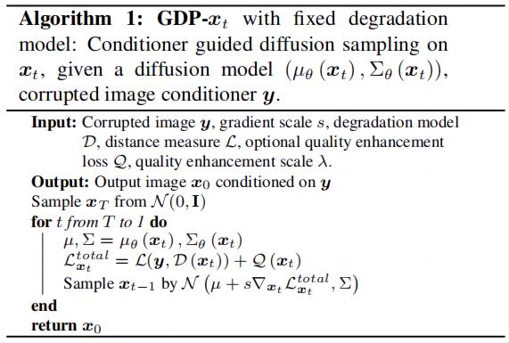
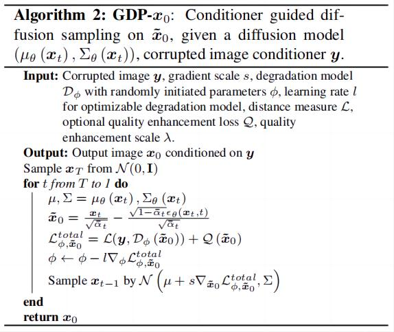
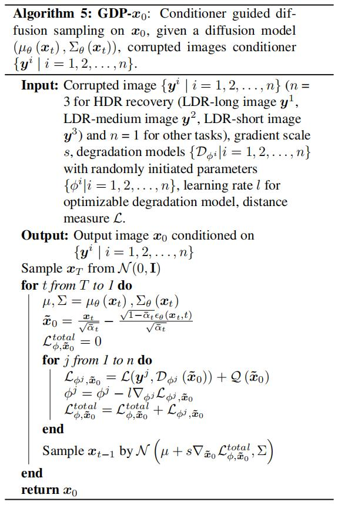
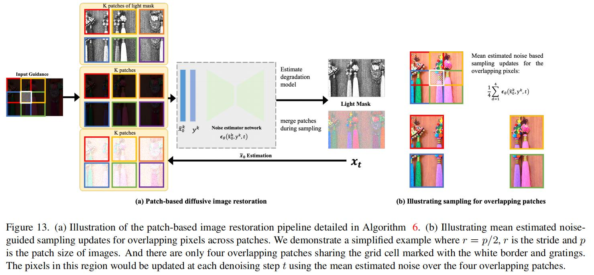

GDP——用于图像恢复的扩散模型¶
综述¶
论文地址：https://arxiv.org/pdf/2304.01247.pdf
源码地址：https://github.com/Fayeben/GenerativeDiffusionPrior
针对领域：图像增强
主要思想¶
图像恢复和增强任务的目的是逆转退化问题，提高图像质量，通常来说，恢复和增强任务可以分为两大类：
- 线性逆问题：例如超分辨率重构（super-resolution）、图像去模糊（deblurring）、图像绘制（inpainting）、图像上色（colorization），其中的退化模型通常是线性且已知的；
- 非线性或盲问题：例如低光增强（low-light enhancement）、HDR图像恢复（HDR image recovery），其中退化模型是非线性且未知的。
对于特定的线性退化模型，图像恢复可以通过神经网络的端到端训练来解决。然而现实世界中，图像会面临多重、复杂的退化，会影响图像的生成过程。
通过生成模型来寻求更一般的图像先验，并且在无监督的策略下处理图像恢复，其中不同退化模型的多个恢复任务可以在推理过程中解决（仅用一个模型解决多个退化任务）。例如，利用GAN在大量干净图像数据集上训练，学习了丰富的现实世界场景知识，通过GAN反演成功地解决了各种线性逆问题（论文链接）；与此同时，扩散模型在GAN的基础上展示了效果非常好并且多样性较高的生成能力以及细节恢复能力。
在本文中，作者提出了用于图像恢复和增强的GDP算法，利用训练好的扩散模型（DDPM）作为通用图像恢复和增强的有效先验，使用退化的图像作为指导。作为一个统一的图像恢复框架，GDP不仅适用于各种线性逆问题，而且第一次推广到非线性、盲目的图像恢复和增强任务。然而，解决盲目的逆问题并不容易，因为需要同时估计退化模型并且以高真度恢复干净图像。由于预训练的扩散模型具有生成先验，DDPM流形内的去噪自然地正则化了恢复图像的真实感和保真度，因此，作者采用了一种盲退化估计策略，在去噪过程中随机初始化和优化GDP退化模型的参数。此外，为了进一步提高图像的真实感和质量，作者系统地研究了一种有效的策略来指导扩散模型，在采样过程中，预训练的DDPM首先通过估计噪声x_t，从噪声x_t中预测出一个干净的图像\tilde{x}_0，在这个中间变量\tilde x_0上添加引导来控制DDPM的生成过程。此外，本文还提出了分层引导和基于补丁的生成策略，在这两个方法的帮助下，GDP可以恢复任意分辨率的图像，其中首先预测低分辨率的图像和退化模型，用于指导高分辨率图像的生成。
注：估计退化模型，也就是了解图像是如何被破坏的，例如去雾退化模型就是在原图上加雾。
本文的贡献：
- GDP是第一个统一的图像恢复算法，可以有效地使用在ImageNet上预训练的单个无条件DDPM，以无监督的方式为统一的图像恢复和增强产生多样化和高保真的输出；
- GDP能够优化随机初始化的退化模型，从而形成一个强大的框架，用于解决任何盲目的图像恢复问题；
- 为了实现任意大小的图像生成，作者提出了分层引导和基于patch的方法，极大地促进了GDP在自然图像生成方面的增强
- 不同于传统的引导方式，GDP直接预测每一步给定的噪声图像的临时输出，并利用GDP直接指导下一步的图像生成。
方法¶
扩散模型¶
扩散模型主要将复杂的数据分布x_0\sim p_{data}逐渐添加噪声，转为简单的噪声分布x_T\sim p_{latent}=N(0,I)，并且从噪声中恢复数据，其中N为高斯分布，DDPM主要包括扩散过程和恢复过程。
扩散过程是一个马尔科夫链，逐步破坏原始图像数据x_0，直到他在T个扩散时间步长变为高斯噪声，对应会采样得到T个破坏程度不同的数据x_1,\dots,x_T，扩散过程的定义为高斯迁移：
反向过程同样也是一个马尔科夫链，迭代地对一个高斯噪声去噪，得到一幅清晰的图像。从噪声x_T\sim N(0,I)到清晰图像x_0的过程可以定义为：
其中\tilde \mu_t(x_t,\tilde x_0)=\frac{\sqrt{\overline \alpha_{t-1}}\beta_t}{1-\overline {\alpha_t}}+\frac{\sqrt{\alpha_t}(1-\overline{\alpha_{t-1}})}{1-\overline \alpha_t}x_t，\tilde \beta_t=\frac{1-\overline \alpha_{t-1}}{1-\overline \alpha_t}\beta_t
生成扩散先验模型（GDP）¶
在本文中，作者的目标就是利用训练好的扩散模型作为统一图像恢复和增强的有效先验，特别是处理种类繁多的图像退化问题。假设退化图像y通过退化模型D得到：y=D(x)，其中x表示原始图像。作者使用存储在某个先验中的x统计量，在x的空间中搜索最匹配y的x（也就是找出y对应的清晰图像x），在本文中，作者将重点研究放在更通用的图像先验，即在大规模自然图像上训练的扩散模型用于图像合成，扩散模型的反向去噪过程可以退化为以y为条件的图像生成过程，具体来说，反向去噪分布p_\theta(x_{t-1}|x_t)，可以用于构成条件分布p_\theta(x_{t-1}|x_t,y)：

注：扩散模型的推理过程就是逐步去噪的过程，逐步将完全的高斯噪声变为清晰图像，在这里，作者让退化图像y作为指导，让高斯噪声在去噪的过程中逐步往y图像所指导的分布上去靠拢，由于预训练的扩散模型具有清晰图像的先验知识，因此可以天然地生成y对应的清晰图像。至于怎么指导扩散模型的推理过程，就是后面需要讨论的内容了。
通过利用-(s\sum\nabla_{x_t}L(D(x_t),y)+\lambda\sum\nabla_{x_t}Q(x_t))，对无条件分布平均值进行平移，可以近似地得到条件迁移p_{\theta}(x_{t-1}|x_t,y)和条件迁移p_\theta(x_{t-1}|x_t)。
注：
- 这里使用损失所产生的梯度来对图像分布做迁移，也就是将随机生成的图像分布一步步迁移到y对应清晰图像的分布；
- 作者发现添加指导的方式和方差\sum的组合会对重构图像产生负面影响，因此后面删去了方差的作用。
单一图像指导¶
超分重构、绘图、上色、去模糊以及光照任务都使用单图像引导。
方差\sum对指导的影响：在以往的条件扩散模型中，对采样过程中的均值位移采用方差\sum，但是在作者的工作中，作者发现方差\sum可能会对实验中生成的图像质量产生负面影响。因此，本文在引导去噪的过程中除去方差，来提高性能，引导去噪的过程可以通过可变尺度\hat s来实现。
关于x_t的指导：首先，最简单的方法就是直接在x_t上应用指导，也就是设计损失，让退化后的x_t趋向于y（直接拉进D(x_t)与y），流程图如上图b所示，过程如下所示：

但是这样做往往效果并不是很好，x_t是一个具有特定噪声大小的噪声图像，但y通常是由没有噪声的清晰图像退化而来，对带噪图像x_t直接执行退化的话，算法难以知道所生成的退化图像是由退化模型D造成的还是原始图像本身带的，因此难以衡量D(x_t)与y之间的距离，直接用MSE损失或者感知损失强行拉近的话，将使x_t偏离原来的噪声轨迹，会导致所生成的图像质量低下。
注：因为要评估退化模型D，所以要在原来的扩散流程上引入一个新的分支，用于评估退化模型。（退化模型需要重新训练吗？）
关于\tilde x_0的指导：为了解决上述问题，作者系统地研究了应用于\tilde x_0的条件信号。在采样过程中，预训练的DDPM模型通常先估计x_t中的噪声（利用x_t和时间步t预测噪声源），从噪声图像x_t中预测一张干净图像\tilde x_0（相当于一个中间态）。之后利用预测的\tilde x_0与y计算损失，利用损失优化退化模型D，并且再利用损失产生的梯度生成图像“引导”（guidance），最后让图像“引导”与x_t一起对下一步潜在的x_{t-1}进行采样，具体过程如下表所示：

核心思想就是在中间变量\tilde x_0上添加引导来控制DDPM的推理过程，通常是利用梯度来逐步做引导，很类似梯度下降法中的操作，流程图如下图所示：
已知的退化：这类任务通常是退化函数已知的任务，例如：去噪和超分辨率重构可以表示为y=(x\otimes k)\downarrow_s，假设低分辨率图像LR通过如下过程获得：首先将高分辨率图像与高斯核（或点扩散函数）k做卷积得到模糊图像x\otimes k；之后对模糊图像执行比例因子为s的下采样操作\downarrow_s。图像修复（inpainting）的目的是恢复图像的缺失像素，相应的退化变化是将原始图像与二值掩模m相乘：\varphi(x)=x\odot m，其中\odot表示哈达玛积。图像上色任务目的是将灰度图像y\in R^{H\times W}还原为具有RGB三色通道的彩色图像x\in R^{3\times H\times W}，为了从彩色图像x得到y，退化变化\varphi只是保留x亮度的灰度变换。
未知的退化：在真实世界中，很多图像都经历非常复杂的图像退化过程，其中退化模型或者退化模型的参数是未知的。在这种情况下，需要同时估计原始图像和退化模型参数，例如弱光增强任务和HDR图像恢复任务可以视为具有未知退化模型的任务。在这里，作者设计了一个简单，并且有效的降解模型来模拟复杂的降解：
扩展版本¶
多图指导：部分任务需要根据多个输入来重建恢复图像，例如HDR任务中，根据曝光度为高、中、低的三组图像来重建一张HDR图像。对此，作者额外扩展了之前的单图指导算法，在逆向过程中，有三张损坏的图像来引导生成，从而随机初始化和优化3张LDR图像的三对盲参数。

恢复任意尺寸图像：预训练的扩散模型只能输出固定大小的图像，而各种图像恢复任务的图像大小是不同的，本文采用基于patch的方法来解决这一问题，将原始图像划分成同样大小的patch，之后分别做恢复。通过这种基于补丁策略的优点可以将GDP算法扩展到恢复任意分辨率的图像，从而促进GDP的通用性。

注：一张图裁剪成不同的patch，分别做恢复，这也是导致算法推理过程很慢的一个重要原因。
损失函数¶
在GDP中，损失函数主要用于优化退化模型D，同时损失产生的梯度用于对扩散模型的推理过程进行指导（guidance），一旦损失很大，说明扩散模型推理得到的图像分布与y差异比较大，需要较大的引导校正过来，因此可以用梯度来指导生成图像的迁跃过程。推理到最后，退化模型可以很好地模拟当前输入图像的退化现象，同时扩散模型在推理过程可以逐步生成y对应的清晰图像。
损失可以主要分为重构损失和质量增强损失两大部分，恢复损失用于恢复条件信号中包含的信息，质量增强损失用于提高最终输出的质量。
恢复损失：恢复损失可以是MSE、SSIM损失、感知损失或者其他用于图像恢复的损失，在这里，作者只采用MSE损失作为恢复损失。
质量增强损失：1）曝光控制损失，用于控制微光图像增强的曝光水平，提高GDP的通用性：
2）颜色恒定损失：利用颜色恒定性损失来校正恢复图像中潜在的颜色偏差，并且在着色任务中连接三个调整通道之间的关系，表示为：
3）照明平滑损失：为了保持所优化的光照掩模M中相邻像素之间的单调关系，对每个光照方差M使用一个照明平滑损失：
损失并不一定是通用的，需要根据具体任务做筛选，具体而言，图像着色任务利用颜色恒定损失来获得更自然的颜色，同时，弱光增强需要失去色恒性（也就是增强前后的颜色不一致）；此外，弱光增强任务利用照明平滑度损失使估计的光掩模更平滑，曝光控制损失使我们能够手动控制恢复图像的亮度。
初步完稿于：2023年7月16日
注：以上仅是笔者个人见解，若有问题，欢迎指正。